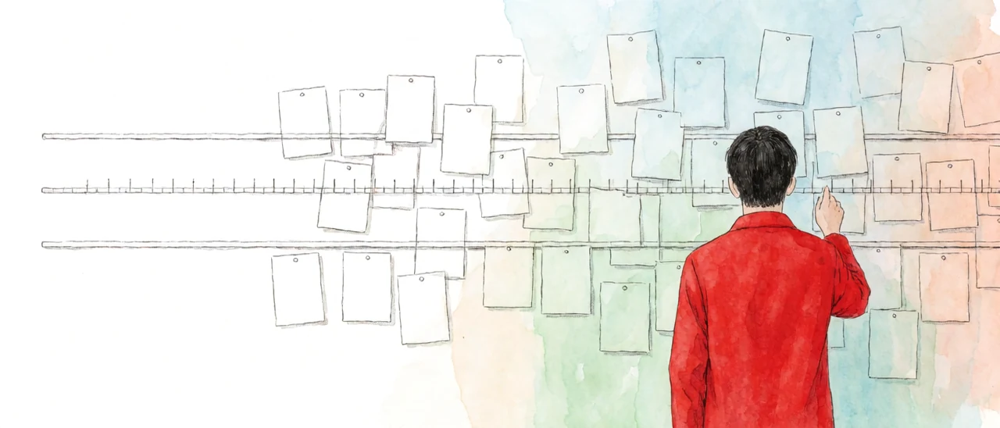

1. Picking a room
Say you're picking a room to move into. Everyone weighs a few things in their head. How much is the rent? How many minutes to the station? Does it get sunlight? If you're weighing three things, each room gets written down as three values: rent of 450,000 won, seven minutes to the station, facing south.
Whether you look at rent in steps of ten thousand won or one thousand won depends on the person. Someone on a tight budget looks closely; someone with room to spare looks loosely. How closely you look is set by your reasons for picking a room.
This piece puts names on that weighing. What tells each thing you weigh apart from the others is the name of its axis, the axis name. How many such things there are is the number of axes. The basic mark you use to judge how closely to look is the unit, and the values measured in that unit are the coordinates. The frame that ties these four together is called an axis coordinate system.
The word dimension, usually rendered in Korean simply as 차원 (chawon), comes from Latin. Its di- (dis-) means to split apart, and that becomes the axis. Its -mension comes from a root meaning to measure, and that becomes the coordinate. So my position is that the accurate Korean rendering of dimension should be 축좌표계, the axis coordinate system. In fact, the four elements of the axis coordinate system were themselves drawn out of a close examination of the word dimension.
※ Tied up with dimension is the tensor, a concept that settled into place only after a long stretch of reshaping and correction. The name comes from the Latin tendere, to stretch, and Hamilton first used it for the magnitude of a quaternion. The usage closer to today's came from Voigt, who attached it to elasticity and stress in crystals. Ricci and Levi-Civita formalized it as a quantity whose form holds when you change coordinates, and Einstein's general relativity made it the standard language of physics. Its early usage and the usage that later hardened look almost unrelated, and even now it means entirely different things in different fields. The two representative usages of today are set side by side in <Cognitive Axioms 04_4>.

2. Facing a problem to solve
A problem that lands in front of you and has to be solved, like picking a room, is what this piece calls the problem at hand. In an axis coordinate system, the number of axes is the number of items you need to examine in order to respond to the problem at hand. Every item carries a certain amount of information needed to fix its basic scale, and once that scale is fixed to the level required, the item's coordinate is measured on it.
The basic component of cognitive computation is the axis coordinate system, and it has four elements: the number of axes, the axis names, the units, and the coordinates.

3. The basic form of cognitive computation
Cognitive computation that actually does work in a human life follows a basic frame. A purpose appears or is brought in. You check the list of items the computation will deal with. You sharpen the reference points inside that list. You measure the target. Based on what this multi-axis system shows, you act to bring about the change you want, and then you measure the result again as a change in coordinates.
Cognitive computation that passes the pragmatic maxim runs this loop. The purpose picks the axes, the axes demand a scale, the scale makes measurement possible, and the measurement decides the next action. The secured foothold of <Cognitive Axioms 01_0> — drive the anchor, clip the rope, climb — is the spot where one turn of this loop ends.

4. Removing substance
Peirce's pragmatic maxim judges the meaning of a concept by its practical effects. Put substance through this maxim and the whole discussion of substance drops out: whether you assume a substance or not, nothing changes in observation, prediction, conclusion, or action. So substance is not a required part of the frame of cognitive computation.
5. The question left over
Take substance away and one question is left. On what grounds do we judge two things to be the same? With a substance, the answer is easy: same substance, same thing. Without it, the grounds have to come from somewhere else. <Cognitive Axioms 04_3> takes up this question.
Count the axes, name them, set the scale, measure.